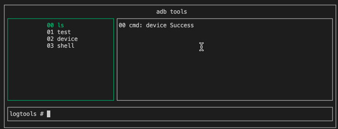

使用curses制作的命令行界面示例
Curses Programming with Python
0003_adbtools.py
0003_adbtools.json
python3 0003_adbtools.py 0003_adbtools.json
0003_adbtools.json为配置文件
name: shell命令集合名字
shell: 数组每一条是一条shell命令
ESC按键、quit、exit退出程序
shell处理程序没退出通过ctr-c退出
可以通过命令、序号、上下方向按键选择+Enter执行
